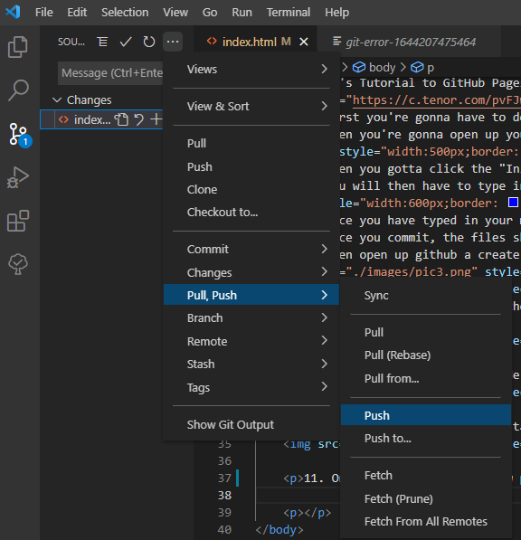

1. First download git.
2. Open up your VSCode and go to this "Source Control" Tab (pic down below)
3. Click the "Initialize Repository"
4. A menu will pop up.
You will then have to type in the "Message"" bar ("# Commit: MsgOfChangesYouDid") --> (Ex. "First Commit: Initialize")
5. Then click the commit button (a check mark about message bar -- look @ pic above) to save changes to your local repository/files
6. Once you commit, the files should disappear from the "Source Control" tab.
7. Then open up github a create a new repository.


8. Then copy the link they provided you with.

9. Then go to the TOP of VSCode and click the "View" tab, then "Command Palette".

10. Then click on the command tab, and search for "Git: Add Remote" to add your remote Repository.

11. Once you click it, It'll prompt you to enter your "Remote Name" (which u can just enter ur project folder name) and a "Remote URL" which is the one URL we copied from the GitHub website Repository.
12. Once you do that, you will have to push your committed files to the REMOTE repository/files (from local repository/files).
13. Now that you have your code uploaded to a remote repository, it's time to deploy it with gitHub pages!